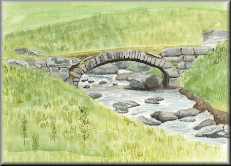

Objectives
A few sentences on the purpose of the lab. Avoid bullet points here for formatting reasons. The title of the lab is taken from the name of this step.
Objectives
By the end of this chapter, you should be able to:
- Define what JavaScript is, where it can be used, and how it came to be
- Describe the evolution of JavaScript and how it has changed rapidly
- Show messages using
alertandconsole.log - Include a script in an HTML file
Introduction to JavaScript
So, what's JavaScript? JavaScript is a programming language that is essential for web development. If you think of any web page you interact with today, JavaScript is most likely providing the action on the page. JavaScript can be used to change the status of a button when it is clicked on, create a chat window at the bottom of your screen, or even create a web-based game. With modern tools like Node.js, JavaScript can now also be used to save data to a database or to create desktop applications. The applications are limitless, and we're excited to see what you'll create. Along with HTML and CSS, JavaScript is one of the three major tools you'll need to understand if you want to build a modern website. While this course won't focus on HTML or CSS, a little later on we'll show you how to include JavaScript in a basic HTML file.
Before we get there, though, let's begin with a little history about JavaScript.
From W3C:
JavaScript, not to be confused with Java, was created in 10 days in May 1995 by Brendan Eich, then working at Netscape and now of Mozilla. JavaScript was not always known as JavaScript: the original name was Mocha, a name chosen by Marc Andreessen, founder of Netscape. In September of 1995 the name was changed to LiveScript, then in December of the same year, upon receiving a trademark license from Sun, the name JavaScript was adopted. This was somewhat of a marketing move at the time, with Java being very popular around then.
ECMAScript
Often in the JavaScript community you'll hear the word ECMAScript thrown around as well, as in ECMAScript 2015 (abbreviated to ES2015, or sometimes ES6). So what's the difference between ECMAScript and JavaScript? There are plenty of resources online discussing the difference, but essentially ECMAScript is a standard. JavaScript is an implementation of that standard. The standard dictates certain features and sets of functionality, but there can be different implementations that follow the standard. There are many different JavaScript engines that implement the ECMAScript standard and are competing for dominance; the most popular right now is Google's V8 engine, but you can see a list of others here.
So how did this standardization process develop? From JavaScript: How Did We Get Here?
The introduction of IE3 and its unfortunate lack of support for the document.images array led Netscape and Sun to standardize the language with help from the European Computer Manufacturers Association (ECMA), giving us yet another name for what had by now become a strange hybrid of powerful and universally supported core functionality and often incompatible object models: ECMAScript. Standardization was begun in conjunction with ECMA in November 1996 and adopted in June 1997 by ECMA and by ISO in April 1998.
JavaScript standardization is now run by a committee called TC39, which governs how ECMAScript features are designed, starting with ECMAScript 2016 (or what is called ES2016).
Tools For JavaScript Development
To help you get set up like a JavaScript developer, we'd like you to install a few tools:
- Google's Chrome Web Browser - Google Chrome has great tools for working with JavaScript in your browser. You may be used to a different browser (e.g. Firefox or Safari) for surfing the web, but we highly encourage you to use Google Chrome for all of your web development.
- Sublime Text 3 - Sublime Text is a text editor used for development. It highlights your code and makes your development experience much nicer. It's not strictly necessary, as there are other text editors around, but Sublime Text is a great option.
Where we will be writing most of our SHORT JavaScript
For most of our short JavaScript examples, we will be using the Chrome console. To open up the console press Option + Command + j on a Mac (or Control + Shift + J on Windows and Linux). Another way to get to the console is to right click on the web page, select Inspect, and then move to the tab called Console.
Inside of this console you can write JavaScript! So let's start by alerting a message. In the Chrome Console, type the following:
alert("JavaScript is sweet!");Hit enter, and you should see a pop-up window with the message you typed inside of the alert. (Make sure that when you are writing commands in the Chrome console, you always press enter after you type your code; otherwise, the code won't run.) Try it again with a different message!
If you find those pop-ups annoying, you can also tell JavaScript to log a message directly to the console, using a function called console.log. Try it out:
console.log("This is less obtrusive.");Once again, after you've written the JavaScript, press enter to execute your code. You should see this message logged in the console.
As you start typing more in the console, you will see it begins to fill up quickly. If you would like to clear the console you can either type in clear() and press enter or press command + k. You can watch the following video to learn more about how to get started with the chrome console.
Getting started with the chrome console
If you would like see learn some more keyboard shortcuts with the chrome console, you can learn more about that here
Writing longer scripts The console is great for writing little bits of JavaScript. But if you need to write code that spans multiple lines, it can be a little annoying. You'll need to type shift + enter to get a line break in the console, since just hitting enter executes your code. This isn't too much trouble for code that's a few lines, but writing a lot of JavaScript in this way can quickly get tiring.
If you want to write longer scripts, you have a few options. We'll outline some of them here:
Option 1: Use an online editor
There are a number of websites out there that will let you write a larger chunk of code, then run it at the click of a button. Some popular ones are JS Bin, Repl.it, JS Fiddle, and CodePen. These aren't tools you'll be using to write extensive JavaScript applications, but they can be helpful learning tools to use until you get more comfortable combining HTML, CSS, and JavaScript.
These tools do have a few quirks, though, and they all have a bit of a learning curve. So eventually it's probably best to move on to one of the following options.
Option 2: Include JavaScript in an HTML file
Another option is to create an HTML file that we can save and edit, and include our JavaScript in that file. To get started, open up a text editor like Sublime Text and create a file with a .html extension (index.html for example). Save your file!
Every HTML file needs a little bit of boilerplate to get started. For now, you can copy and paste the following code in your index.html file:
<!DOCTYPE html>
<html>
<head>
<title>JavaScript Test Site</title>
</head>
<body>
<p>Nothing going on yet.</p>
</body>
</html>
How do we add JavaScript? For now, edit the file by adding a <script></script> tag. Inside of the <script></script> tag you can write JavaScript. Here's an example of how that might look:
<!DOCTYPE html>
<html>
<head>
<title>JavaScript Test Site</title>
<script>
alert("Hello, World!");
</script>
</head>
<body><p>Nothing going on yet.</p>
</body>
</html>Now all you need to do is open this file in Chrome. In Sublime Text this is pretty straightforward: You can control + click on the code and select "Open in Browser" to open the file.
Once the page loads in Chrome, you should see the alert message pop up. In other words, the JavaScript executes automatically, there's no need for you to take any action.
Once you get that working, try writing a few lines of JavaScript inside of your script tags.
Option 3: JavaScript and HTML in 2 Separate Files
Another option is to keep your HTML and JavaScript in separate files. This is a better practice, especially as your HTML and JavaScript files get longer. To do this, you still need to include a script tag in your HTML, but now this tag should link to a separate JavaScript file. Here's how you could do that if you have a file called first.js:
<!DOCTYPE html>
<html>
<head>
<title>JavaScript Test Site</title>
<script src="first.js"></script>
</head>
<body>
<p>Nothing going on yet.</p>
</body>
</html>In this case, we also need a additional JavaScript file called first.js! So create this file, and inside of it write some JavaScript. Maybe it looks like this:
alert("Coming to you from first.js!"); As before, the code should execute as soon as you open the HTML page in Chrome.
Exercises What is the difference between JavaScript and ECMAScript? Who is Brendan Eich? How do you hide and show the Chrome console? Create a simple page with a script tag. Inside of the script tag declare a couple of variables and then log their values to the console. Research prompt and confirm - what do they do?
Tables, Lines and Images
Tables can look like this:
| Head 1 | Head 2 |
|---|---|
| cell 1 | cell 2 |
| cell 3 | cell 4 |
A horizontal rules above and below
Some more images:

Links and Code Blocks
You can inert links in bullet points:
You can also insert links to other steps:
More Code Block examples
publish(path, course) {
const basePath = '../' + path + '/' + this.folder;
futils.initEmptyPath(basePath);
this.resources = this.talks.concat(this.labs);
futils.copyFileToFolder(this.img, basePath);
futils.writeFile(basePath + '/index.html', nunjucks.render('topic.html', this));
futils.writeFile(basePath + '/ajaxlabel.html',
nunjucks.render('ajaxlabel.html',
{ url: this.url.substring(5) + '/' + this.folder }));
futils.writeFile(basePath + '/indexmoodle.html', nunjucks.render('indexmoodle.html', this));
console.log(this.title);
this.publishTalks(basePath);
this.publishLabs(basePath, course);
}This was autodetected as javascript. This one is html:
<div class="ui segment pushable">
<div class="ui inverted labeled icon left inline vertical sidebar menu">
{% for resource in course.allLabs.resources %}
{% if resource.title == title %}
<a class="active item" href="../../{{resource.parentFolder}}/{{resource.folder}}/{{resource.link}}">
{{resource.title}}
</a>
{% else %}
<a class="item" href="../../{{resource.parentFolder}}/{{resource.folder}}/{{resource.link}}">
{{resource.title}}
</a>
{% endif %}
{% endfor %}
</div>
<div class="pusher">
<div class="ui basic segment">
<br>
{% for chapter in chapters %}
<div class="ui tab segment lab" data-tab="{{chapter.shortTitle}}">
{{ chapter.content }}
</div>
{% endfor %}
</div>
</div>
</div>Images
Image without a title:

Image with a title:

Exercises & Archives
You can link to zipped archives:
This archive must be placed in the archives folder as shown above.
Exercise 1:
Instructions for exercise 1.
Exercise 2:
Instructions for exercise 2.
Exercise 3:
Instructions for exercise 3.